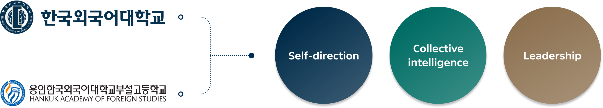
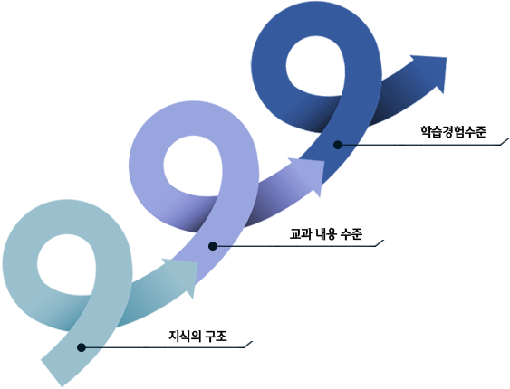
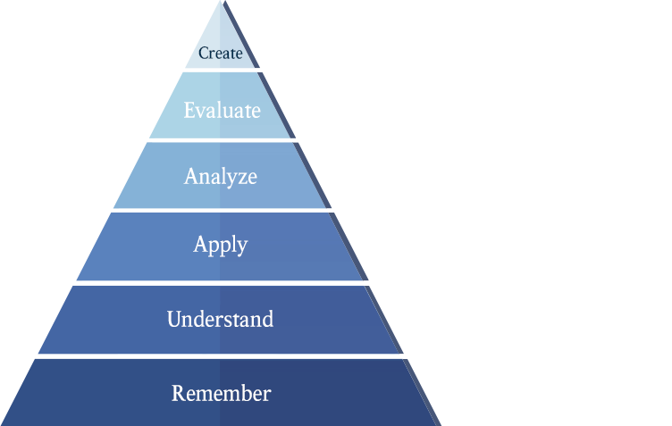
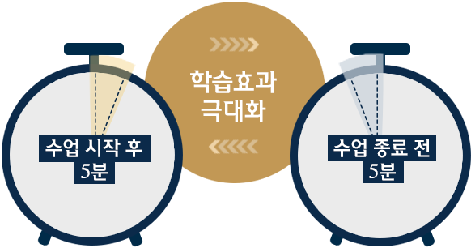
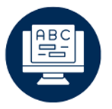
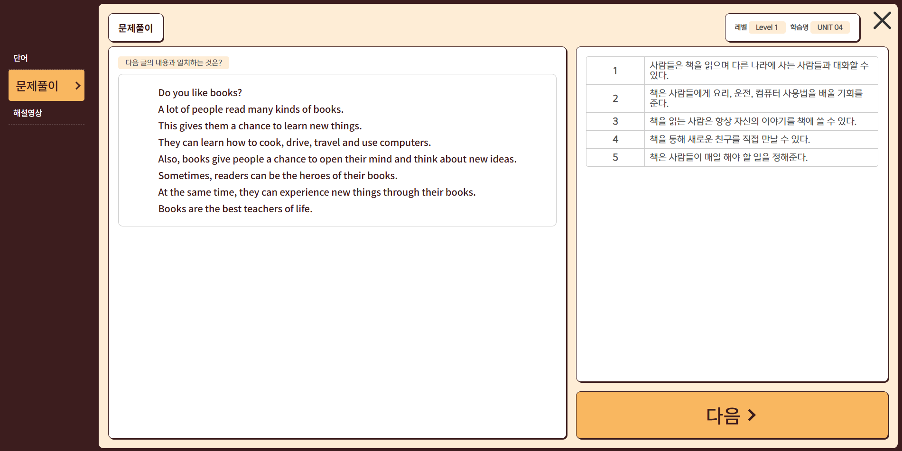
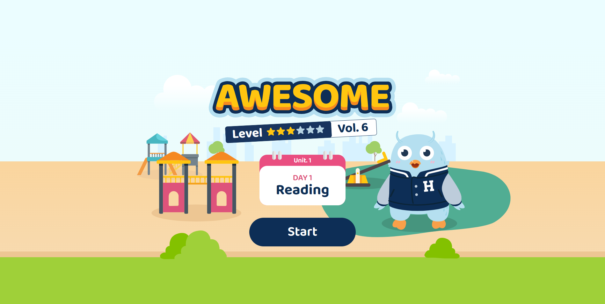
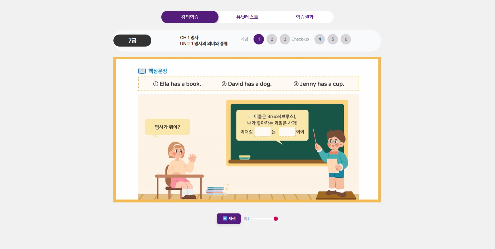
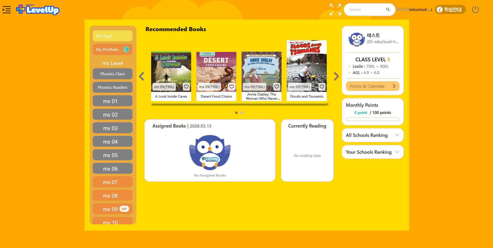
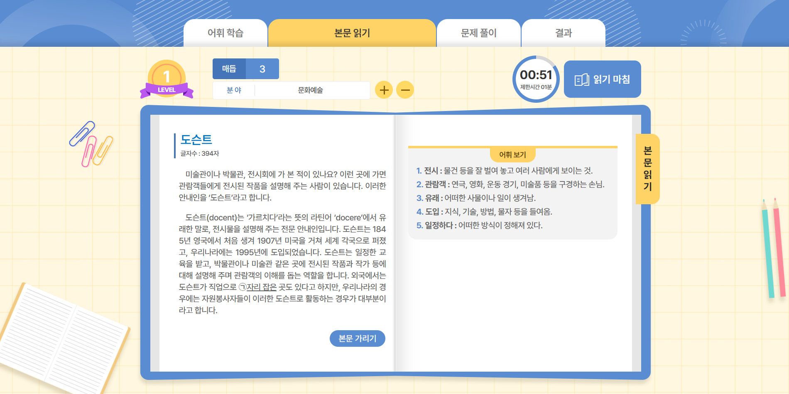

유치 - 초등 - 중·고등까지
고려한 학습시스템
- 영역별 주제별 학습 - 레벨/수준별 심화확장 학습
- 한 번 배우고 끝나지 않고 복습-확장-심화의 과정을 통해 나선형으로 발전하는 학습 구조
- 중학과 수능영어 및 수능까지 미리 대비 가능한 커리큘럼
한국외대와 용인외대부고의
명문을 잇는 교육 혁신의 시작언어의 벽을 넘어서는 영어, 외대HS어학원
한국외국어대학교와 용인외대부고의 70년간의 오랜 외국어 전문 인력 양성 KNOW-HOW를 기반으로,
최적의 교재와 교수법을 채택하여 제공합니다.

한국외국어대학교와 용인외대부고의 교육 이념과 인재상을 따라
자기주도적 능력과 리더십을 겸비한 인재로서 역량을 강화하여 성장할 수 있도록 지도합니다.



HUFS Link 온라인 학습 플랫폼

다양한 확장학습온·오프라인 통합 교육으로 영어와 모국어 문해력 향상 및 자기주도적 학습을 통한 창의적 사고력 강화




